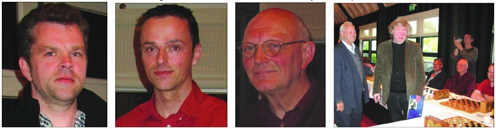
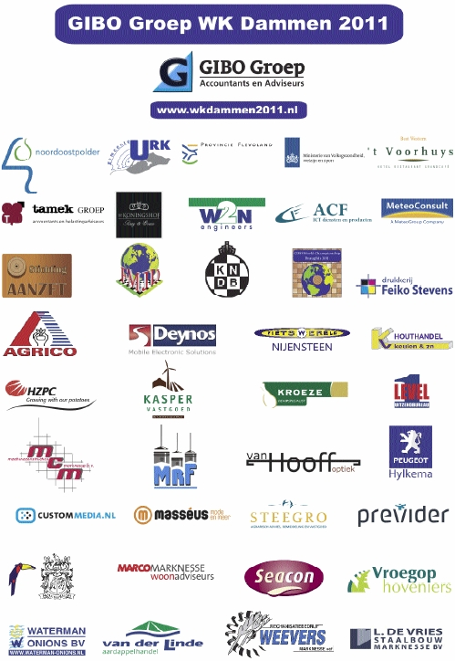

Bulletin d’information Numéro 1
Bulletin d’information Numéro 1 du Championnat Mondial du Jeu de Dames 2011 Groupe GIBO.
Le début: Avec plaisir nous vous informons sur le progrès du Championnat Mondial du Jeu de Dames 2011. En décembre 2008 nous avons commencé les premiers pourparlers afin d’explorer les possibilités d’une organisation du Championnat Mondial du Jeu de Dames 2011 aux Pays-Bas.
Un an plus tard il n’y avait plus d’obstacles et nous avons pu conclure : « le Championnat Mondial du Jeu de Dames 2011» aura lieu à Emmeloord (commune de Noordoostpolder) et à Urk pendant la période du 6 mai au 28 mai 2011.
Les activités à côté: Ton Sijbrands a joué une partie simultanée le 18 mai 2010 à Urk. Il a joué contre quatorze adversaires. Le résultat : gagné onze fois et trois parties nulle contre Jacob Post, Wiebe van der Wijk et Jaap Akse.
Tentative de record du monde de jeu de dames en partie simaltunée, le 18 décembre 2010 à Emmeloord par le champion africain GMI Jean Marc Ndjofang, originaire du Cameroun, accompagné par des explications de Wiebe van der Wijk.
Championnats scolaires pour les élèves de l’enseignement primaire le 28 décembre 2010 à Emmeloord.
Championnats scolaires pour les élèves de l’enseignement primaire le 29 décembre 2010 à Urk.
Un match entre les équipes des conseils municipaux et les conseillers municipaux des communes de Noordoostpolder et d’Urk le 8 avril 2011 à Emmeloord.
Championnat du Jeu de Dames de vitesse de Flevoland (province néerlandaise) le 21 mai à Urk.
Les réunions: la direction de la fondation « Aanzet » se réunit régulièrement avec des volontaires, des informaticiens, des sponsors, la KNDB (Fédération Royale de Jeu de Dames Néerlandaise) et la FMJD (Fédération Mondiale de Jeu de Dames). C’est une tâche énorme de préparer un tel championnat sans interruptions et sans problèmes.
Les analyses et les communiqués à la presse : Le Groupe GIBO Championnat Mondial du Jeu de Dames 2011 se félicite du fait que Paul Oudshoorn et Hein Meijer se sont mis d’accord avec la direction de la fondation de présenter les analyses et les communiqués à la presse. La place sponsorisée: la direction de l’organisation du Championnat Mondial du Jeu de Dames 2011, après avoir consulté le sponsor principal, a le droit de proposer, sous des conditions strictes, d’accorder une place sponsorisée à un autre joueur. La réalisation de cette règle nous a coûté beaucoup de temps et d’énergie parce qu’un accord sur ce sujet avec la KNDB n’était pas possible. La FMJD a dû prendre une décision et a fini par accorder une place sponsorisée au joueur de haut niveau Wiebe van der Wijk, originaire d’Emmeloord. Le 6 novembre 2010 van der Wijk était devenu champion de la Frise (province néerlandaise).
La place sponsorisée: la direction de l’organisation du Championnat Mondial du Jeu de Dames 2011, après avoir consulté le sponsor principal, a le droit de proposer, sous des conditions strictes, d’accorder une place sponsorisée à un autre joueur. La réalisation de cette règle nous a coûté beaucoup de temps et d’énergie parce qu’un accord sur ce sujet avec la KNDB n’était pas possible. La FMJD a dû prendre une décision et a fini par accorder une place sponsorisée au joueur de haut niveau Wiebe van der Wijk, originaire d’Emmeloord. Le 6 novembre 2010 van der Wijk était devenu champion de la Frise (province néerlandaise).
Les contacts avec les entreprises : le 12 et le 13 novembre 2010 la fondation « Aanzet « était présente à une réunion réseau à Urk. Le but de cette présence de la fondation était : éveiller l’attention des entreprises locales pour la publicité de leur entreprise pendant le Championnat Mondial du Jeu de Dames 2011 Groupe GIBO. Le premier décembre 2010 la fondation « Aanzet » a accepté l’invitation de se présenter pendant la « BAB-Réunion » du Groupe GIBO. Le président IJsbrand Haven et Wiebe van der Wijk ont présenté le Championnat Mondial du Jeu de Dames 2011 aux entreprises de la commune de Noordoostpolder.
Le Centenaire: En 2011 la KNDB va célébrer son premier centenaire. Elle a décidé, après avoir consulté la fondation « Aanzet » de donner une réception. La réception aura lieu le 6 mai 2011 à Emmeloord dans une salle du théâtre « ‘t Voorhuys » (Beurszaal) à Emmeloord. On s’attend à une présence d’environ 350 invités internationaux.
Le Tirage au Sort : Le tirage au sort du Championnat Mondial du Jeu de Dames 2011 aura lieu le 8 avril 2011. Tout cela va se passer à la « Beursplein» à Emmeloord. Les fruiticulteurs et leurs produits régionaux y seront omniprésents.
Les Salles du Tournoi : les matchs du Championnat Mondial vont se dérouler dans deux salles magnifiques : la « Beurszaal »du théâtre « ‘t Voorhuys» à Emmeloord et la « Willem-Alexander-zaal» à Urk. La « Beurszaal »sera munie d’un tapis pour éviter le moindre bruit. La « De Koningshof » a des tapis dans toutes ses salles.
Les Damiers Electroniques: les matchs seront joués aux damiers électroniques de sorte que tous ceux qui s’intéressent à ce sport peuvent suivre en direct les matchs partout au monde au site Web du Championnat Mondial.
Le site Web: nous avons réussi à publier les communiqués à la presse et d’autres articles sur notre site Web (www.wkdammen2011.nl) en néerlandais, en français, en anglais et en russe.
Pour finir :Les mois à venir demanderont sans doute beaucoup de temps et d’énergie, mais aidé par le soutien de beaucoup de personnes nous allons réussir à mener cet événement à une fin magnifique. Nous sommes très heureux de constater que tant de sponsors, petits et grands, veulent du bien au Groupe GIBO Championnat Mondial du Jeu de Dames 2011. Ainsi la fondation « Aanzet « éprouve beaucoup d’inspiration pour continuer son chemin vers le Championnat Mondial du Jeu de Dames 2011.
